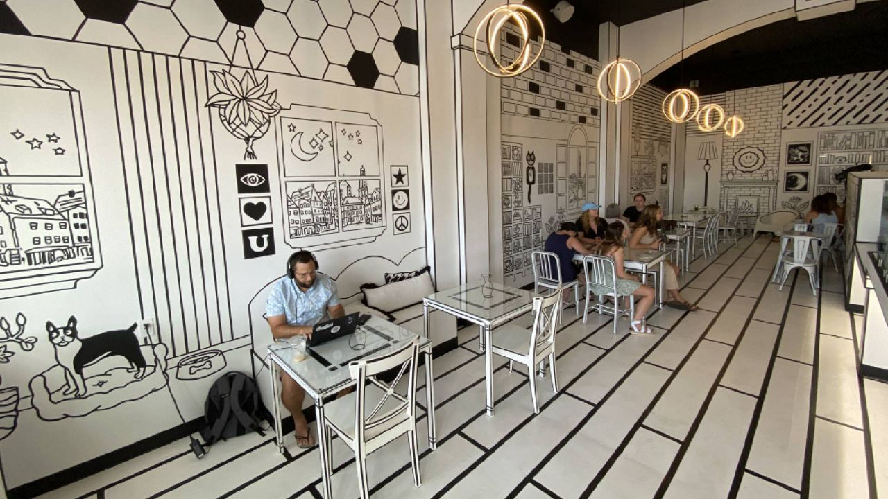
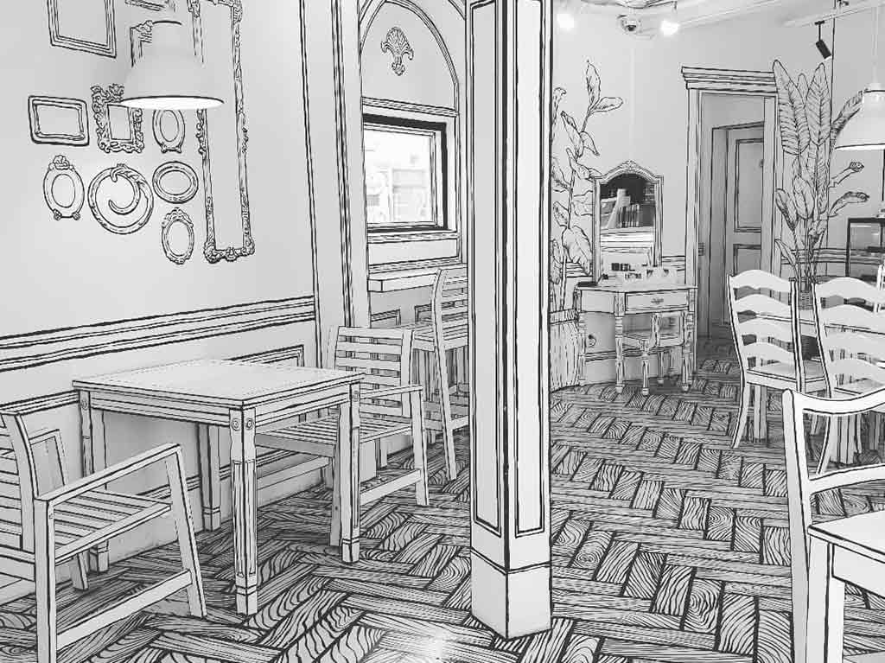

Blog 1
cada semana compartimos un nuevo articulo sobre el mundo del cafe, desde recetas exclusivas hasta consejos sobre la preparación perfecta.

Blog 2
En nuestro blog, exploramos temas como la historia del café, las tendencias actuales y las mejores prácticas para disfrutar de una taza perfecta.

Blog 3
Descubre artículos sobre la cultura del café, entrevistas con expertos y mucho más. Nuestro blog es tu fuente de inspiración para disfrutar al máximo de cada taza.